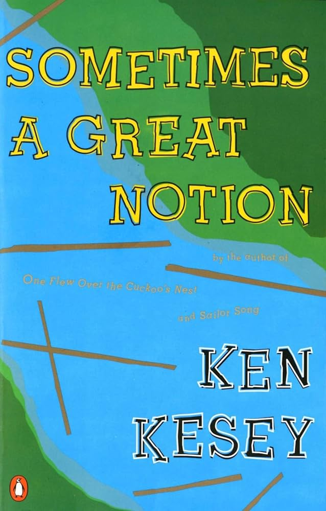

Ken Kesey, Sometimes a Great Notion (1964)
Content warning:
Death, discrimination and bigotry, violence
Synopsis
Sometimes a Great Notion by Ken Kesey is a novel set in the logging country of coastal Oregon. The story centers on the Stamper family, who have been moving West for generations and carry a defiant conviction to challenge the status quo and make their own way. Their stubborn independence is reflected in their household, which sits, eroding, on the banks of the fictional Wakonda Auga River. As independent loggers, the Stampers refuse to join a local workers' strike, to “NEVER GIVE A INCH,” and their determination to keep working despite community pressure creates conflict and strife with the town, perpetuates long-standing grudges within their own family, and brings them ever closer to the waters of the river.
Essay
Ken Kesey’s Sometimes a Great Notion draws you into the Oregon West with its wide cast of perplexing and dysfunctional characters and the rough environment they’re at odds with. The novel explores topics deeply rooted in Oregon’s history, cutting into themes of individualism vs. conformity and man vs. nature through the Stamper family and their struggle with the loggers’ union strike.
Set along the fictional Wakonda Auga River, the novel never ceases to weave narrative and place together through weather, landscape, wildlife, and culture. From soupy fog to crashing waves, from blackberry thickets to rushing water and pouring rain, whether honking geese or ruthless wind, the environment is not a backdrop, but determines how people survive. Logging families depend on the forests for their livelihoods, while the river serves as both a source of transportation and creeping danger. Kesey's descriptions of rain, mud, and timber create a portrait of coastal Oregon any Oregonian can recognize.
Through the novel’s depiction of rural Oregon communities, Sometimes a Great Notion reflects on the state's long history of logging in the timber industry, a tradition in the Pacific Northwest that predates Oregon's 1859 statehood by decades. Kesey does not present pioneering independence as entirely positive or negative in his story. Instead, he explores the benefits and costs of self-reliance within a close-knit community. This tension between individual freedom and communal responsibility remains an important part of Oregon's real-life cultural identity. Oregonians have always battled with independence and collective efforts to protect their communities, natural resources, and the environment.
The novel's connection to Oregon is strengthened by Kesey's own life. Although not as popular as his other work, One Flew Over the Cuckoo's Nest, Kesey spent much of his life in Oregon and considered Sometimes a Great Notion his best work and most major achievement. Drawing on his familiarity with the state's people and industries, he created a work that feels connected to the experiences of rural Oregon residents, so much so that it is considered to be one of the twelve “Essential Northwest Books”.
I chose this novel for my love of Oregon’s forests. Originally, I intended to major in environmental science, then geography, and that was if I didn’t work for my family’s lumber company first. (Though ultimately I did none of these, and welded instead before taking up a pen in the place of a rod.) But I also chose Ken Kesey’s iconic novel for its vivid depiction of Oregon’s natural beauty, which was what I first fell in love with when I moved to Oregon three years ago. Though many of Oregon’s depictions within this novel can be terrifying at times—the miserable soaking rain, the thick engulfing fog, the deep dark woods, and the ever-rising river—those were the very things that allured me to this fantastical place out of the pages of a fairytale. I sincerely fell in love with Oregon, and for me, this novel is a reminder that this land’s beauty and harshness are deeply intertwined with the lives of the people who depend on it and on one another.
Author Bio
Ken Kesey was born on September 17, 1935, in La Junta, Colorado, and grew up in Springfield, Oregon, graduating from the University of Oregon in 1957. He began writing One Flew Over the Cuckoo's Nest in 1960 after completing a graduate fellowship in creative writing at Stanford University. This novel was an immediate success, as was his second novel, Sometimes a Great Notion. Ken Kesey would settle in Pleasant Hill, Oregon, where he lived with his wife and his three children for the rest of his life in addition to teaching at the University of Oregon. He died November 10, 2001. After a public service in Eugene, he would be buried on his farm next to his son.
Further Reading
Ken Kesey, One Flew Over the Cuckoo's Nest (1962)
Peter Stark, Astoria (2015)
- Tells of the settlement of the Oregon coast by fur traders
